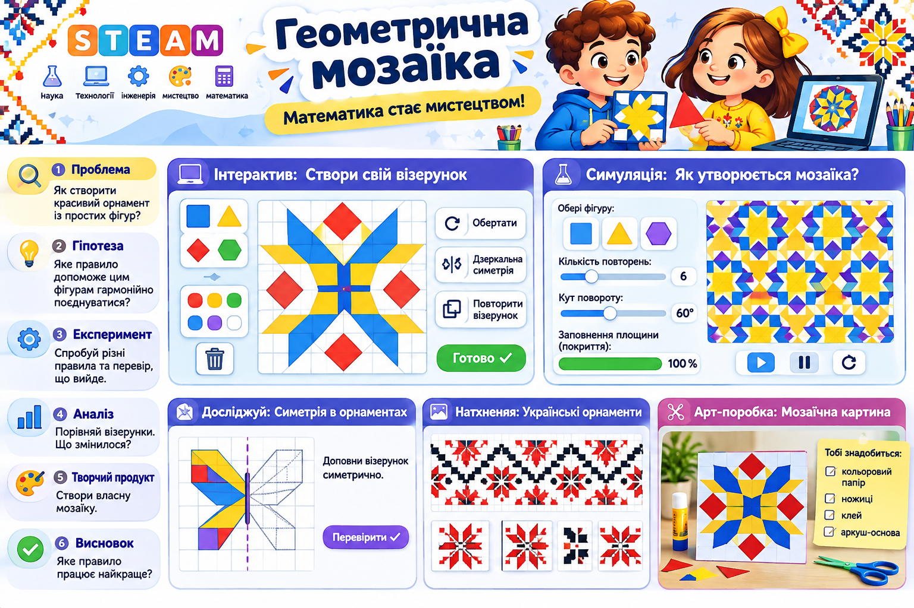

Майстерка «Геометрична мозаїка»
Проблема: як створити красивий орнамент із простих фігур за математичним правилом?
Спробуйте придумати правило, перевірити його на цифровій моделі та створити власну картину. Працюйте з комп'ютера або телефона.
1. Конструктор мозаїки
Оберіть фігуру й колір. Натискайте на клітинки, щоб малювати. Повторне натискання повертає фігуру.
Алгоритмічні дії
Полотно готове.
Порада: намалюйте в лівій половині декілька фігур, а тоді застосуйте віддзеркалення.
2. Симуляція: як правило змінює орнамент?
Змінюйте параметри та спостерігайте за результатом. Це математична модель: однакове правило дає передбачуваний візерунок.
Дослід: встановіть 4 повтори й 0°, потім 4 повтори й 90°. Що змінилося? А що залишилося незмінним?
3. Досліджуємо симетрію
Уявіть вертикальну лінію посередині аркуша. Якщо ліва й права половини віддзеркалені, маємо осьову симетрію. Намалюйте на полотні лише ліву половину й натисніть «Віддзеркалити».
4. Арт-майстерня вдома: паперова мозаїка
Матеріали: аркуш паперу, кольорові олівці або фломастери, лінійка. Ножиці й клей не потрібні.
- Намалюйте на аркуші сітку 4×4 або 6×6.
- Оберіть дві геометричні фігури й три кольори.
- Створіть маленький фрагмент орнаменту та повторіть його за правилом.
- Додайте симетрію або поворот, якщо хочете.
- Дайте роботі назву та покажіть, де в ній математика.
5. Висновок і збереження результату
Яке правило найкраще допомогло створити гармонійний візерунок? Чи підтвердилася гіпотеза?
Усі малюнки створюються у Вашому браузері. Нічого не надсилається на сервер.